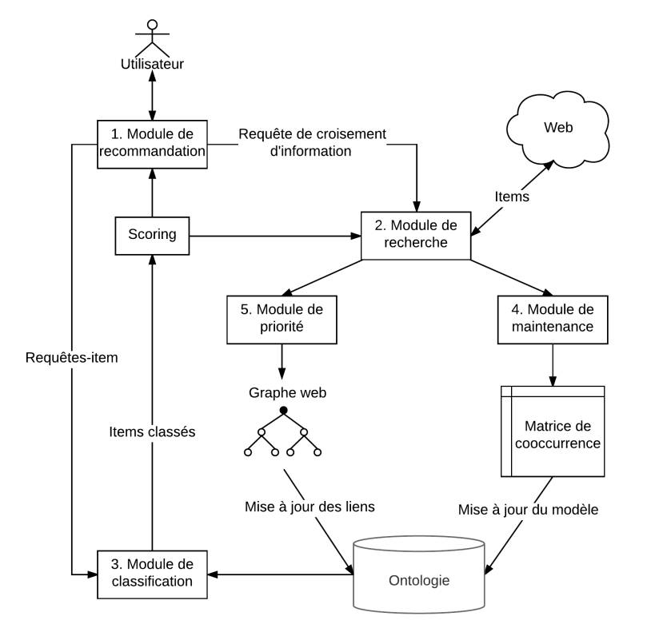

S-HMC RecSys¶
Approche Big Data et Web Sémantique pour la fouille et la classification automatique de données web.
Ces travaux ont fait l'objet de la thèse de Thomas Hassan.
Contexte¶
Ce projet fait suite aux travaux de recherches antérieurs de la thèse de David Werner en partenariat avec l'entreprise First-Eco, spécialiste de la recommandation de nouvelles économiques. Dans ces travaux, un processus d'analyse et de classification de données textuelles basées sur des outils sémantiques et un moteur d'inférence a été défini. Des résultats préliminaires de ces travaux ont été publiés, et ont montré les limites de l'approche. Ce projet est également en partenariat avec l'entreprise First-Eco.
Les travaux¶
Les travaux s’articulent autour de quatre verrous scienti- fiques :
- La construction non-supervisée d’un modèle prédictif dans un contexte Big Data,pour la classification de textes en langage naturel
- L’utilisation et le passage à l’échelle du raisonnement logique en contexte Big Data, dans le cadre d’une classification basée sur une description sémantique de l’information
- L’intégration d’un modèle prédictif pour la découverte de sources d’information et le croisement d’information sur le web
- L’adaptation d’un modèle prédictif, décrit par une ontologie, aux évolutions des données dans un contexte web non structuré
Les contributions de ce travail sont triples.
- Premièrement, une architecture d’analyse de données appelée HMC Sémantique, ou Classification Hiérarchique Multi-Label est décrite. L’architecture étend les travaux de Werner (2015), et pallie les limitations techniques de celle-ci. L’architecture consiste en l’apprentissage d’un modèle de classification à partir de grands volumes de données, et l’exploitation de ce modèle pour réaliser la classification de nouvelles données. Ces deux aspects du processus sont évalués, de façon exhaustive dans les chapitres 3 et 4. Les résultats obtenus démontrent premièrement la faisabilité de l’approche dans un contexte Big Data. La qualité du modèle générée est évaluée d’une part, par une évaluation lexicale pour l’apprentissage d’une hiérarchie d’attributs cibles en contexte non supervisé, et d’autre part par l’analyse des performances proches de l’état de l’art pour la tâche de classification. L’évaluation lexicale montre le potentiel de l’approche pour l’extraction d’attributs et d’attributs de classe qualitatifs en contexte non supervisé. L’évaluation de la classification montre des résultats proches de l’état de l’art pour la tâche de classification multi-label en contexte supervisé, et suggère de bonnes performances en contexte non supervisé, bien qu’il n’ait pas été possible d’effectuer une comparaison à l’état de l’art. Cette architecture est l’apport principal de ces travaux, puisque les deux autres apports reposent en partie sur celle-ci. Cette architecture a été développée en collaboration avec Rafael Peixoto, avec qui j’ai eu la chance de travailler sur cette partie du projet de recherche. En particulier, sa participation à la formalisation de l’approche a été essentielle au développement et aux publications issues du projet, notamment Hassan et al. (2015), Peixoto et al. (2015b) Peixoto et al. (2015c) Peixoto et al. (2016b) Peixoto et al. (2016c). Je le remercie également pour son esprit critique, sa rigueur scientifique, et globalement pour les échanges productifs que nous avons eu vis-à-vis de l’approche et de l’évaluation préliminaire exposée en première partie de ce document. Les chapitres 2 à 4 reflètent cette collaboration, une partie de leur contenu est donc similaire aux travaux exposés dans les travaux de thèse de Rafael Peixoto.
- La seconde contribution est une architecture de recherche et de croisement d’information sur le web, basée sur une qualification sémantique de l’information issue de l’architecture HMC Sémantique. Cette seconde architecture tente de répondre aux verrous scientifiques établis dans le domaine de la recherche d’information sur le web (section précédente), et apporte des éléments de réponse via la combinaison des méthodes d’apprentissage machine et des technologies du web sémantique pour la recherche d’information sur le web. Elle reflète les travaux présentés dans Hassan et al. (2017). L’architecture est évaluée pour la tâche de croisement d’information, et comparée à une approche de l’état de l’art. Cette évaluation montre les avantages de l’approche, qui permet une adaptation continue de la recherche d’information, améliorant ainsi la performance comparativement à l’état de l’art.
- La dernière contribution concerne la mise en application de l’approche, dans un contexte industriel réel. Cette application est une des motivations initiales des travaux, soutenus par l’entreprise Actualis SARL, partenaire et pour partie financeur de ce projet de recherche. Au delà du développement d’une preuve de concept et de la résolution des verrous scientifiques sur lesquels ces travaux se sont concentrés, les problématiques réelles de mise en application ont toujours été au cœur du projet de recherche. La réali sation d’une solution logicielle fiable, qui apporte une plus-value dans un contexte métier précis est un des objectifs de ces travaux. Cette application tente de résoudre des problématiques concrètes au sein de l’entreprise, notamment dans le but d’améliorer certaines parties critiques du travail effectué par les documentalistes. Le volume de données à traiter chaque jour par les documentalistes est important, ce qui induit une possible perte d’informations à destination de leur clients.
Architecture de la solution SemXDM

Les partenaires¶
- L'entreprise First-Eco
- L'école doctorale SPIM et le conseil régional de Bourgogne pour le financement de la bourse Jeune-Chercheur-Entrepreneur
- La SATT-GE pour la gestion du contrat de collaboration
Publications¶
Conférences internatinales¶
- Thomas Hassan, Christophe Cruz, Aurélie Bertaux; Predictive and Evolutive Cross-Referencing for Web Textual Sources; SAI Computing Conference 2017 18-20 July 2017 - London, United Kingdom.
- Hassan Thomas, David Werner, Aurélie Bertaux, Christophe Cruz. PROFILE REFINEMENT IN ONTOLOGY-BASED RECOMMANDER SYSTEMS FOR ECONOMICAL E-NEWS.IE, The 14th International Conference on Informatics in Economy, May 2014, Bucharrest, Romania. 2014
- Hassan, T., Peixoto, R., Cruz, C., Bertaux, A., & Silva, N. (2014, October). Semantic HMC for big data analysis. In Big Data (Big Data), 2014 IEEE International Conference on (pp. 26-28). IEEE.
- Hassan, T., Peixoto, R., Cruz, C., Bertaux, A., & Silva, N. Extraction de la Valeur des données du Big Data par classification multi-label hiérarchique sémantique. 12ème atelier sur la Fouille de Données Complexes (FDC) Extraction et Gestion des Connaissances (EGC 2015).
- R. Peixoto, T. Hassan, C. Cruz, A. Bertaux, and N. Silva “Semantic HMC for business intelligence using cross-referencing” in 14th International Conference on Informatics in Economy (IE2015)
- R. Peixoto, T. Hassan, C. Cruz, A. Bertaux, and N. Silva, “Semantic HMC: A Predictive Model using Multi-Label Classification For Big Data,” in the 9th IEEE International Conference on Big Data Science and Engineering (IEEE BigDataSE-15), 2015
- Werner, D., Hassan, T., Bertaux, A., Cruz, C., & Silva, N. (2015). Semantic-Based Recommender System with Human Feeling Relevance Measure. Intelligent Systems in Science and Information 2014 (pp. 177-191). Springer International Publishing.
- Peixoto, R., Hassan, T., Cruz, C., Bertaux, A., & Silva, N. (2016, June). An unsupervised classification process for large datasets using web reasoning. In Proceedings of the International Workshop on Semantic Big Data (p. 9). ACM.
Revues internatinales¶
- Peixoto, R., Hassan, T., Cruz, C., Bertaux, A., & Silva, N. (2016). Hierarchical Multi-Label Classification Using Web Reasoning for Large Datasets. Open Journal of Semantic Web (OJSW), 3(1), 1-15.